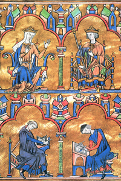
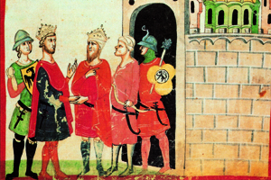

Lezione 8  Crociate
Crociate

-
375
585
-
245
315
-
325
285
-
335
595
SETTIMA CROCIATA
1248-1254: La Settima crociata, bandita da papa Innocenzo IV, e comandata da Luigi IX di Francia, termina con la sconfitta e la prigionia del re. Liberato dietro riscatto, torna in Francia.ROMA
Nel 1274 Gregorio X tenta di indire una nuova crociata, ma non ottiene adesione alcuna. Alla fine del secolo si conclude l’epopea crociata.
TUNISI
1270: Lo sfortunato re di Francia Luigi IX trova la morte a Tunisi mentre guida l’Ottava crociata in Terrasanta. La Chiesa lo fa santo, e viene raffigurato in numerose opere d’arte, come questa miniatura trecentesca in cui lo vediamo insieme alla madre Bianca di Castiglia.
FEDERICO II
Nel 1228-1229 si ha una iniziativa personale dell’imperatore Federico II, imbarcato verso l’Oriente con 500 cavalieri, che stipula una tregua col sultano d’Egitto Malikel- Kamil. In questa miniatura trecentesca tratta dalla Cronica di Giovanni Villani è raffigurato l’incontro, avvenuto nel 1229; in quell’occasione viene stipulata una tregua decennale che consente ai cristiani l’ingresso a Gerusalemme, ma la Chiesa scomunica Federico per la mancata partecipazione alla crociata, bollandolo come eretico.